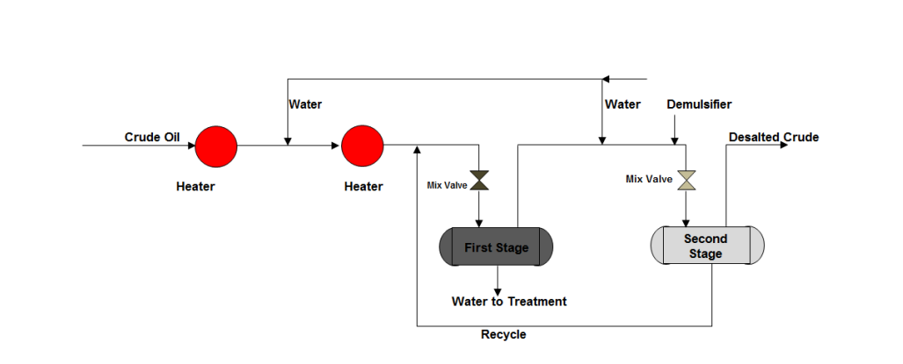
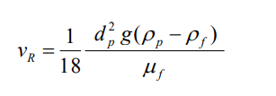
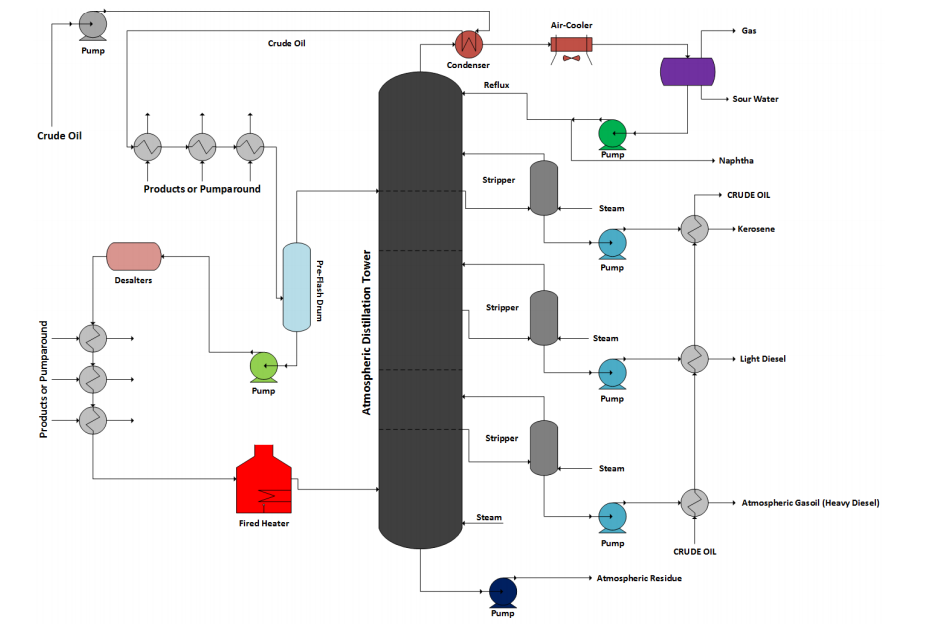
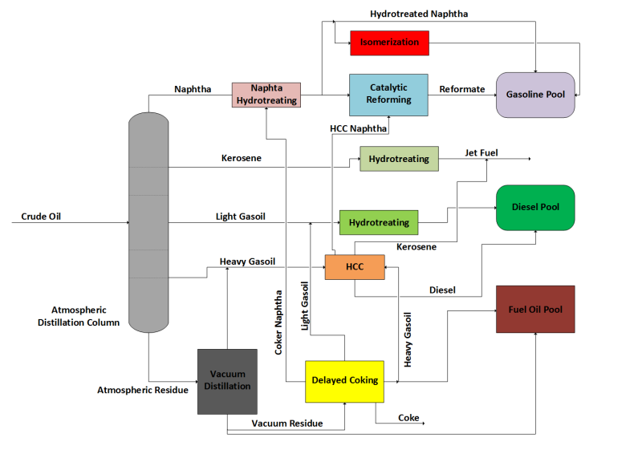
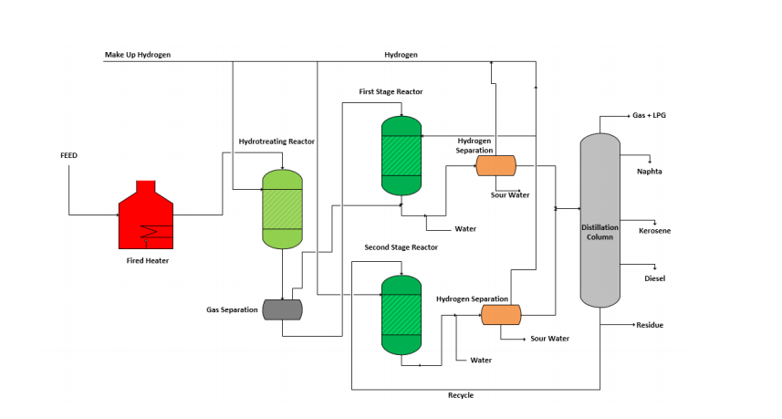

The continuous supply of adequate crude oil to the refining hardware is one of the assumptions adopted by the refiners to the installation of refining assets or economic analysis of already installed units. However, according to the installed geopolitical scenario, the supply of adequate crude oil to the refining hardware can be seriously threatened, mainly to refiners that operate with lighter and high cost crudes. In this sense, more flexible refining hardware in relation of the processed crude slate is an important competitive advantage in the downstream sector, mainly the processing of heavy and extra-heavy crudes due to his lower acquisition cost when compared with the lighter crude oils. The difference in the acquisition cost between these oils is based on in the yield of high added value streams which these oils present in the distillation process, once the lighter crudes normally show higher yields of distillates than the heavier crudes, his market value tends to be higher. The processing of heavy crudes shows some technologic challenges to refiners once, due to his lower yield in distillates, it is necessary the installation of deep conversion technologies aiming to produce added value streams that meet the current quality and environmental requirements, furthermore the concentration of contaminants like metals, nitrogen, sulfur, and residual carbon tends to be high in the heavier crudes, making the processing of his intermediate streams even more challenger. The challenge in the processing of heavy crude oil starts in the desalting step before the sent to the distillation unit. The desalting process consists basically in the water addition to the crude aiming to promote the salt removal from the oil phase that tends to concentrate in the water phase, Figure 1 presents a simplified process flow diagram for a crude oil desalting process with two separation stages.

Figure 1 Crude Oil Desalting Process with two Separation Stages
The separation of oil and water phases in the separation drums occurs through
the sedimentation process, due to the density gap between the water and the crude oil.
Considering that the sedimentation process can be theoretically described by the Stokes
Law, according to equation 1.
(1)

According to equation 1, the sedimentation velocity is proportional the density
gap, in the case of heavier crudes, this gap is lower leading to a lower sedimentation
velocity and the need of higher residence times to an adequate separation. Another
complicating factor in the case of heavy crudes is the higher viscosity of the oil phase
that hinders the mass transfer in this phase. Due to these factors, refining hardware
designed to process heavy crude oils needs more robust desalting sections taking
account the trend of higher salt concentration in the crude and a harder separation
process. Table 1 presents an example of crude oil classification based on the API Grade.
After the desalting process, the crude oil is sent to the atmospheric distillation tower, according to presented in Figure 2. 
Figure 2 Atmospheric Distillation Process of Crude Oil To heavier crudes, the yield of distillates by simple distillation is relatively reduced and the bottom section in the atmospheric distillation units tends to be overload. Table 2 presents a comparative analysis of the yields of different crude oils. Table 2 – Estimated Yields in the Atmospheric Distillation Process for Different Crude
Normally, heavy crude oils have higher concentration of metals, sulfur, and
nitrogen. These contaminants tends to be distributed in the intermediates streams
concentrating in the heavier streams, making necessary more robust conversion
processes and tolerant to these contaminants.
Aiming to avoid damage to the catalysts of deep conversion processes as FCC
and hydrocracking, normally refineries that process heavier crudes promotes a better
fractionating of bottom streams of vacuum distillation tower. When the crude oil
presents high metals content, it is possible to include a withdraw of fraction heavier than
the heavy gasoil called residual gasoil or slop cut, this additional cut concentrates the
metals in this stream and reduce the residual carbon in the heavy gasoil, minimizing the
deactivation process of the conversion processes catalysts as aforementioned. Normally,
the residual gasoil is applied as the diluent to produce asphalt or fuel oil.
Due to the high asphaltenes content in the heavier crudes, the residual carbon in
the bottom barrel streams is also higher than observed in the lighter crudes, this
characteristic reinforces, even more, the necessity of installation process units with high
conversion capacity.
Available technologies to processing bottom barrel streams involve processes
that aim to raise the H/C relation in the molecule, either through reducing the carbon
quantity (processes based on carbon rejection) or through hydrogen addition.
Technologies that involves hydrogen addition encompass hydrotreating and
hydrocracking processes while technologies based on carbon rejection refers to thermal
cracking processes like Visbreaking, Delayed Coking and Fluid Coking, catalytic
cracking processes like Fluid Catalytic Cracking (FCC) and physical separation
processes like Solvent Deasphalting units.
Due to the high content of contaminants in the crude oil and consequently in the
intermediary chains, refining equipment destined to the processing of heavy crudes
requires high hydrotreatment capacity. Usually, the feed streams of deep conversion
units like FCC and hydrocracking go through hydrotreatment processes aiming to
reduce the sulfur and nitrogen contents as well as the content of metals. Higher metals
and asphaltenes content lead to a quick deactivation of the catalysts through high coke
deposition rate, catalytic matrix degradation by metals like nickel and vanadium or even
by the plugging of catalyst pores produced by the adsorption of metals and high
molecular weight molecules in the catalyst surface. By this reason, according to the
content of asphaltenes and metals in the feed stream are adopted more versatile
technologies aiming to ensure an adequate operational campaign and an effective
treatment.
Figure 3 presents a scheme of reactants and products flows involved in a
heterogeneous catalytic reaction as carried out in the hydroprocessing treatments.
Figure 3 Reactants and Products Flows in a Generic Porous Catalyst (GONZALEZ, 2003) In order to carry out the hydroprocessing reactions, it is necessary the mass transfer of reactants to the catalyst pores, adsorption on the active sites to posterior chemical reactions and desorption. In the case of bottom barrel streams processing, the high molecular weight and high contaminants content require a higher catalyst porosity aiming to allow the access of these reactants to the active sites allowing the reactions of hydrodemetallization, hydrodesulfurization, hydrodenitrogenation, etc. Furthermore, part of the feed stream can be in the liquid phase, creating additional difficulties to the mass transfer due to the lower diffusivity. To minimize the plugging effect, in fixed bed reactors, the first beds are filled with higher porosity solids without catalytic activity and act as filters to the solids present in the feed stream protecting the most active catalyst from the deactivation (guard beds). Due to the higher severity and robustness of the processes, the installation cost of the refining hardware capable to process heavier crudes tends to be higher when compared with the light and medium oils as well as the operating costs. Figure 4 shows a possible refining configuration to be adopted by refiners to add value to heavy crudes.
Figure 4 Process Arrangement to a Refinery Operating Under Coking/Hydrocracking Configuration The refining scheme presented in Figure 4, normally called Coking/Hydrocracking configuration, is capable of ensuring high conversion capacity, even with extra-heavy crudes. The presence of hydrocracking units gives great flexibility to the refiner, raising the yield of middle distillates. Figure 5 presents a basic process flow diagram for a typical hydrocracking unit designed to process bottom barrel streams. This configuration is adopted when the contaminants content (especially nitrogen) is high, in this case, the catalyst deactivation is minimized through the reduction of NH3 and H2S concentration in the reactors. Among the main hydrocracking process technologies available commercially we can quote the process H-Oil developed by Axens Company, the EST process by ENI Company, the Uniflex Processes by UOP, and the LC Fining technology by Chevron Company.

Figure 5 Typical Hydrocracking Unit Dedicated to Treat Bottom Barrel Streams
Although the higher processing cost, to process heavy crudes can present high
refining margin. As described earlier, the reduced acquisition cost in relation of lighter
crudes, as well as the ease of access and reliability of supply, can make the heavy crudes
economically attractive, mainly in countries like Canada, Venezuela, and Mexico that
have great reserves of heavy and extra-heavy crude oils.
The flexibility of the refining hardware is a fundamental factor to ensure the
competitiveness of the refiner in the refining market. Normally, the refineries are
designed to process a range of crudes, and wider the range, according to the technical
limitations, more flexible is the refinery related the processed crude slate, this
characteristic is relevant and strategic taking into account the possibility to enjoy the
processing of low-cost crude oils by opportunity besides giving more resilience to
refiner in scenarios of restricting access to the petroleum market, mainly face
geopolitical crisis.
The current scenario of the downstream industry indicates the tendency of
reduction in the transportation fuels demand and the raising in the demand by
petrochemical intermediates creating the necessity of growing the conversion capacity
by the refiners in the sense of raising the yield of light olefins in the refining hardware.
Furthermore, the new regulation over the marine fuel oil (Bunker), IMO 2020, should
create even more pressure over the refiners with reduced conversion capacity.
In a first moment, aiming to comply with the new bunker specification, noblest
streams, normally directed to middle distillates should be applied to produce fuel oil
with low sulfur content what should lead to a shortage of intermediate streams to
produce these derivatives, raising the prices of these commodities. The market of high
sulfur content fuel oil should strongly be reduced, due to the higher prices gap when
compared with diesel, his production will be economically unattractive, leading refiners
with low conversion capacity to opt to carry out larger capital investment in order to
give their refining hardware more robustness for the processing of heavier crudes.
The market value of the crude oil with higher sulfur content, normally the
heavier crudes, tends to reduce after 2020. In this case, refiners with refining hardware
capable to add value to these crudes can have a great competitive advantage in relation
of the other refiners taking into account the lower acquisition cost of the crude oil and
higher market value of the derivatives, raising then the refining margins.
As briefly described, heavy crude processing offers technological challenges to
refiners, however, according to the geopolitical and the downstream industry scenarios,
processing heavier oils can be a competitive advantage. The current scenario of the
refining industry indicates a strong tendency to add value through the production of
lighter products, mainly petrochemical intermediates. This fact, coupled with the need
to produce bottom streams with lower contaminants after 2020 (IMO 2020), increases
even more the pressure on refineries with low bottom barrel conversion capacity under
risk of loss of competitiveness in the market, in this scenario it is possible to have a
strong tendency of resumption in the capital investments in the preparation of these
refiners to the processing of petroleum residues and heavier crudes.
SPEIGHT, J.G. Heavy and Extra-Heavy Oil Upgrading Technologies. 1 st ed. Elsevier Press, 2013. ROBINSON, P.R.; HSU, C.S. Handbook of Petroleum Technology. 1st ed. Springer, 2017. GONZALEZ, G. S. Junior Engineer Training Course Kinetics and Reactors. Oxiteno Company, 2003. GARY, J. H.; HANDWERK, G. E. Petroleum Refining Technology and Economics.4 th ed. Marcel Dekker., 2001.